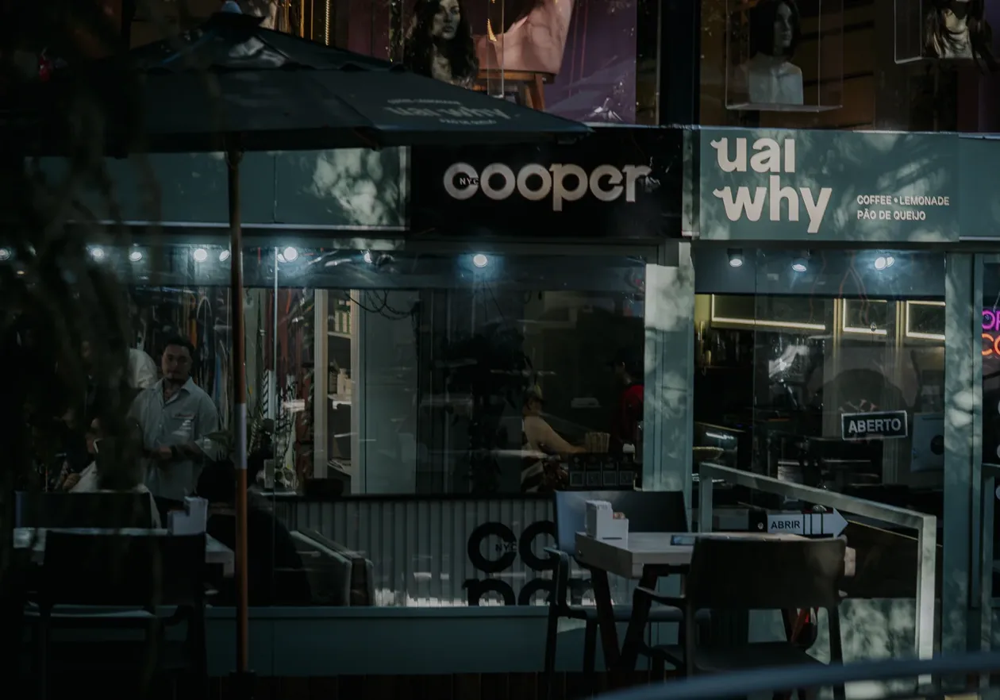
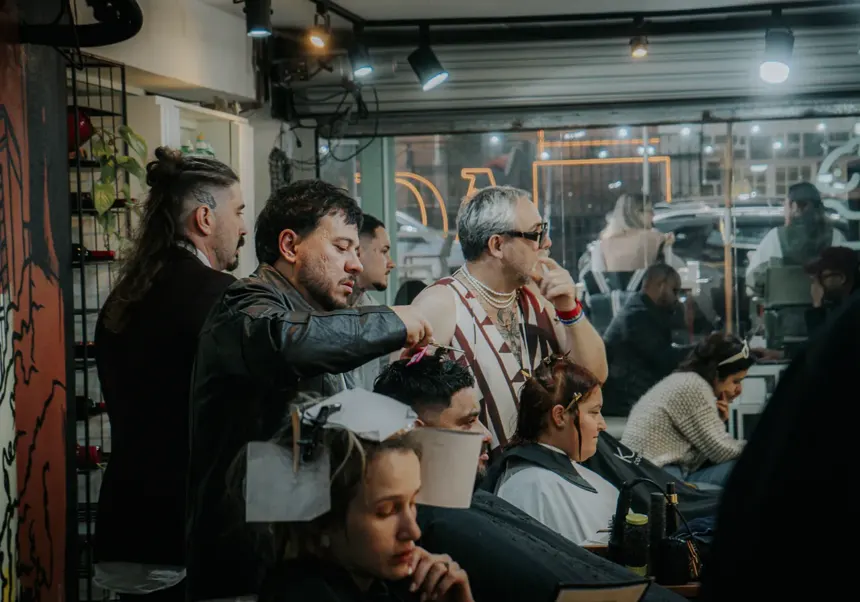
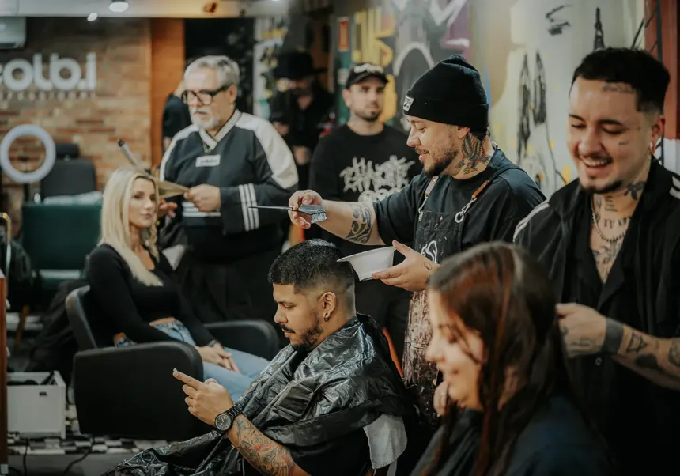
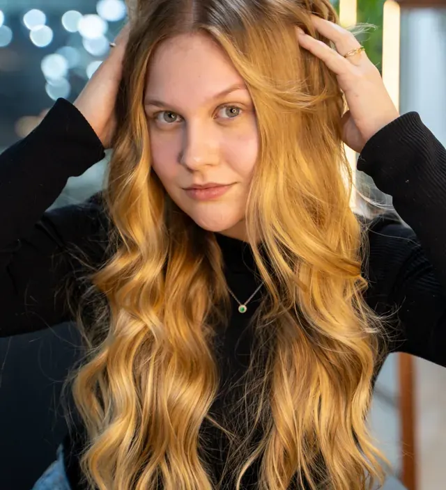
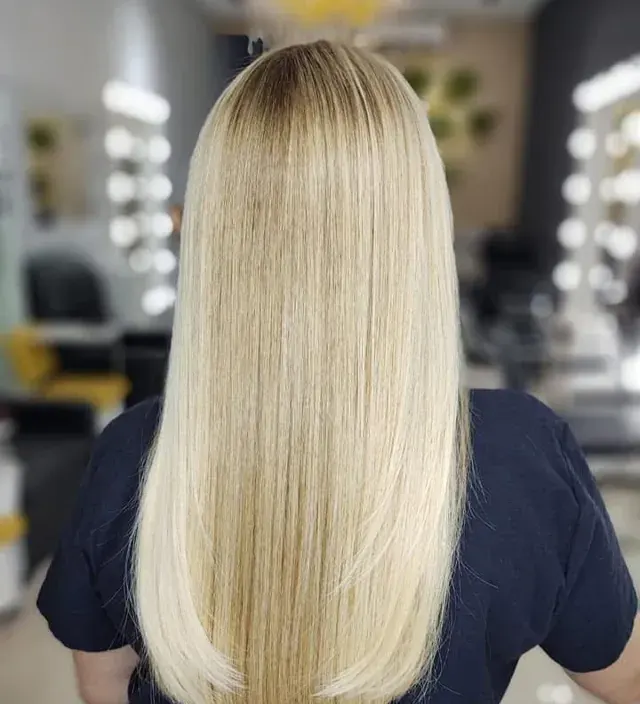
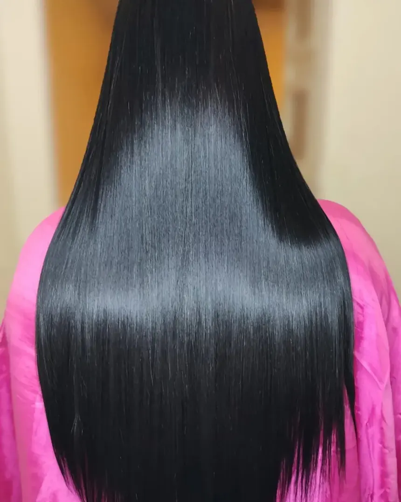
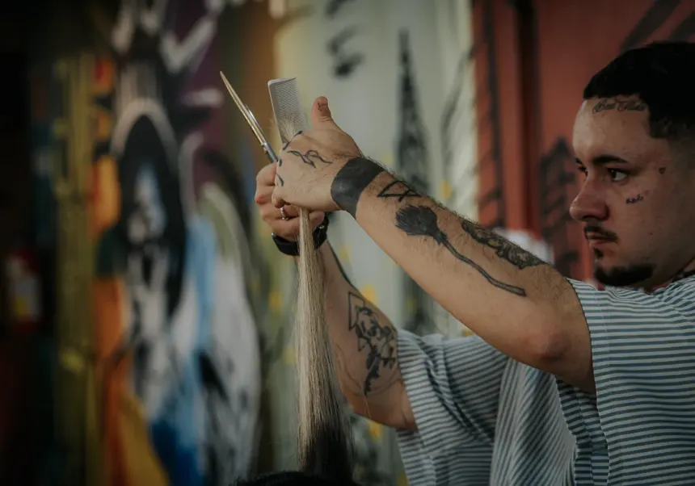
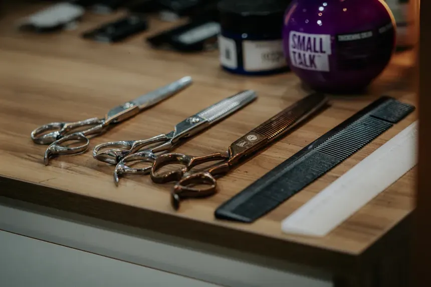
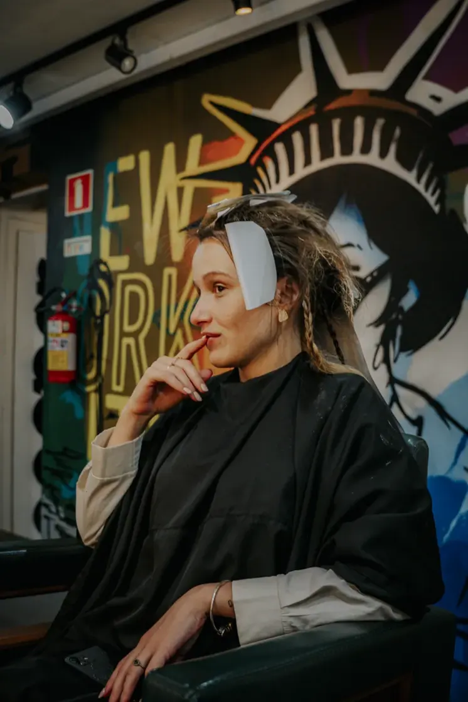

Manhattan
O lado preciso da Cooper. Tons construídos com atenção à luz, ao corte e ao movimento.
BEAUTY POINT NEW YORKER
Cabelo e arte no mesmo endereço.


O SALÃO · DESDE 2023
De um ponto de vista diferente.
Um pedacinho de NYC no coração do Moinhos de Vento. O esquilo resolveu fazer morada. Aqui, a equipe combina técnica, repertório e escuta para criar um visual que tenha a tua cara.

O lado preciso da Cooper. Tons construídos com atenção à luz, ao corte e ao movimento.
Arte nas paredes, textura nos cortes e espaço para experimentar.
A referência para um atendimento que abraça estilos e texturas diferentes.
TRABALHOS EM DESTAQUE
Da luz das mechas ao acabamento do corte. Vê alguns trabalhos da equipe.


EDITORIAL · MECHAS
Mechas assinadas Cooper.
A equipe estuda o corte, o tom de pele e o jeito que teu cabelo se move para escolher onde clarear. A raiz suave deixa o contraste mais natural à medida que os fios crescem.
Tratamento e finalização inclusos no serviço de mechas.
★★★★★
“As mechas ficaram lindas, com um resultado muito natural”
Vitoria Veiga
EDITORIAL · CORTE FEMININO
Do clássico ao alternativo.
O corte começa com uma conversa sobre textura, formato e o jeito que tu arruma teu cabelo no dia a dia.
| Corte feminino | A partir de R$ 180 |
|---|---|
| Corte de expert | Sob consulta |
Manutenção de franja gratuita para clientes da Cooper.
EDITORIAL · COLORAÇÃO
Da manutenção de raiz à mudança completa.
Explora três referências de cor. Na consulta, a equipe conversa contigo sobre o histórico dos fios e o resultado que tu procura.
EDITORIAL · ALISAMENTOS
Movimento, acabamento e brilho.
A Cooper oferece alisamento formol free e lifting. A equipe avalia o teu cabelo para explicar as opções e o acabamento esperado.
| Formol free | R$ 400 |
|---|---|
| Lifting | R$ 300 |
Adicionais: R$ 50 para limpeza de pontas e R$ 12 para híper finalização expressa.

CATÁLOGO
Busca pelo nome ou escolhe uma categoria. As durações são estimativas e a equipe confirma os valores e o tempo de atendimento.
Duração: 45–75 min
Agendar esteDuração: 45–90 min
Agendar esteDuração: 45–90 min
Agendar esteDuração: 15–30 min
Agendar esteDuração: 30–60 min
Agendar esteDuração: 3–5 h
Agendar esteDuração: 3–5 h
Agendar esteDuração: 3–5 h
Agendar esteDuração: 3–5 h
Agendar esteDuração: 1–3 h
Agendar esteDuração: 1–2 h
Agendar esteDuração: 2–4 h
Agendar esteDuração: 1–3 h
Agendar esteDuração: 45–90 min
Agendar esteDuração: Consultar
Agendar esteDuração: Consultar
Agendar esteDuração: 30–60 min
Agendar esteDuração: 45–90 min
Agendar esteDuração: 45–90 min
Agendar esteDuração: 45–90 min
Agendar estePENTEADOS E EVENTOS
Solto, preso ou do teu jeito.
Conta à equipe o tipo de evento e leva as tuas referências. A Cooper conversa contigo sobre acabamento, tempo e disponibilidade.

NOSSO ESPAÇO
Espelhos, arte nas paredes e um café enquanto tu espera.
VISITE-NOS
R. Padre Chagas, 347, Moinhos de Vento, Porto Alegre – RS, CEP 90570-080
Terça a sábado, 10h às 20h. Domingo e segunda, fechado.
Na primeira visita, procura o letreiro COOPER NYC da foto de abertura. Confirma o ponto de chegada com a equipe.
AVALIAÇÕES
5,0 · 118 avaliações
Registro de 13/10/2026. Confere a nota atual no Google.
★★★★★
“Atendimento excelente,lugar incrível e ótimo astral”
Luciana Parareda Guaragna
★★★★★
“Lugar maravilhoso, sofisticado e com profissionais acima da régua!”
Daisy Ribeiro Amora
★★★★★
“As mechas ficaram lindas, com um resultado muito natural”
Vitoria Veiga
BLOG DO SALÃO


FAQ
Na R. Padre Chagas, 347, Moinhos de Vento, Porto Alegre – RS, CEP 90570-080.
De terça a sábado, das 10h às 20h. Domingo e segunda, fechado.
Chama a Cooper pelo WhatsApp (51) 99561-7292. Informa o serviço e a equipe confirma o horário.
Mechas, coloração, cortes, alisamentos, tratamentos capilares, sobrancelhas, maquiagem e penteados.
No perfil da Cooper NYC no Google Maps.
Escolhe o serviço e indica quando gostarias de ir.